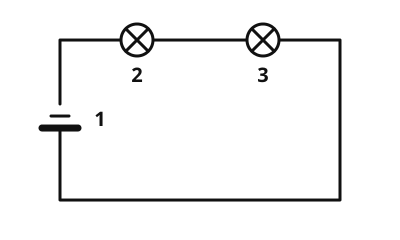

Series circuit
The idea
You can connect two lamps to a battery in two ways. The first way is called a series circuit: the lamps hang one behind the other like beads on a string.
What to remember
- Series circuit
In a series circuit the parts are connected one behind the other. There is only one path for the current.

The current has to pass through both lamps, one after the other. There is no other path. Labels: 1 battery, 2 lamp 1, 3 lamp 2.
Source: Eigene Zeichnung / own drawing for this app. Licence: CC0-1.0.It follows that:
- If one lamp is broken or unscrewed, the circuit is broken and all lamps go out.
- A switch in the series switches all lamps on and off together.
- The more lamps you connect in series, the dimmer they shine.
Example
The old string of lights
In some older strings of lights all the little bulbs are connected in series. If you unscrew one bulb, the whole string goes out. Then you look for the broken bulb until the string lights up again.
Practice
Solution
Right answer: The statement is false.
In a series circuit there is only one path for the current. If a lamp is missing, the circuit is open and the other goes out too.
More on it:
Solution
Exactly one. right answer
The parts hang one behind the other, so the current has only one way around the circuit.
One for each lamp.
Separate paths for each lamp exist in a parallel circuit, not in a series circuit.
None; the lamps shine because of the battery.
Without a path for the current no lamp shines. The circuit must be closed.
In a series circuit there is only one path, on which the current flows through all parts one after the other.
More on it:
Solution
Right answer: 1. Battery, 2. Switch, 3. Lamp 1, 4. Lamp 2
In a series circuit the current runs through all parts one after the other and back to the battery at the end. The order of the switch and the lamps does not change that they all go on and off together.
More on it:
Try it out
Build the series circuit in the circuit builder, unscrew one lamp and watch the other.